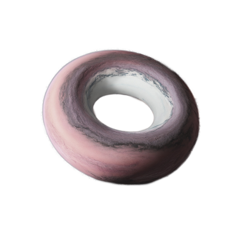

BÝT a EXISTOVAT. 
Někdy je to těžší, než se zdá. Tolik hluku, tolik tlaku.!
Ležím v tichu na zádech.
Nadechuji se do břicha, dech stoupá do hrudníku a nakonec až pod klíční kosti.
Postupně uvolňuji celé tělo.
Palce u nohou. Prsty. Nárty. Chodidla. Paty. Kotníky.
Lýtka, kolena, stehna.
Pánev. Břicho. Hrudník.
Každý nádech mě vzdaluje od vnějšího světa.
Každý výdech rozpouští napětí.
Tělo se stává lehkým.
Mysl tichou.
Na okamžik už není potřeba nic držet.
Jen být.